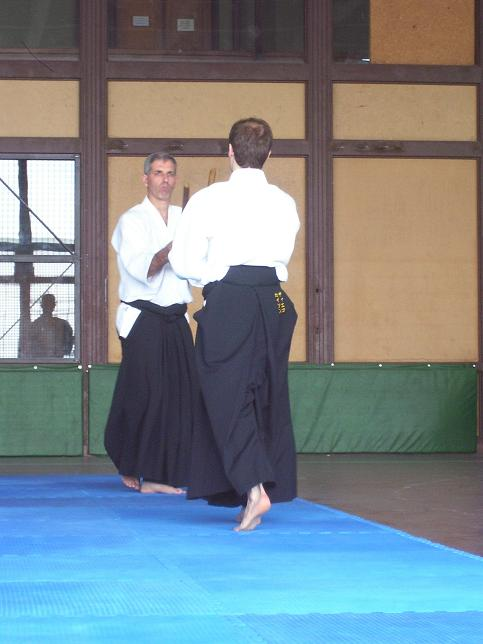

| INICIO | CLASES | TÉCNICAS | VIDEOS | SALUD | SEMINARIO | ORGANIZACIONES | HISTORIA | TEXTOS | BIBLIOGRAFÍA | LINKS |

Tsuzukiwaza - Videos
Son técnicas de Ki Aikido hechas con uno o varios compañeros.
La idea de este tipo de práctica es encontrar la armonía en la continuidad del movimiento. Se comienza desde la posición de sentados a 4 metros uno de otro y se realiza una secuencia de técnicas que no es la unión de varias técnicas inidividuales. Hay un hilo conductor entre ellas, realizando un ejercicio único y completo. Manteniendo la mente y el cuerpo en una actitud de continuidad, percepción y precisión de movimientos.
Más abajo podrán encontrar el listado de dichas técnicas así como los videos correspondientes a las mismas.
.
Listado de Tsuzukiwaza según la Ki No Kenkyukai Association Internationale.
Agosto 2012
1.- Katatedori Tenkan. (3 izda, 3 dcha)
1.- Kokyunage.
2.- Kirikaeshi.
3.- Zemponage.
4.- Kaitennage.
5.- Ikyo.
6.- Yonkyo.
7.- Nikyo (Katameru).
2.- Ushiro Katatedori. (3 izda, 3 dcha)
1.- Urakaeshi (estática).
2.- Zemponage.
3.- Koteoroshi (1er.mano).
4.- Ikyo.
5.- Sankyo Nage.
6.- Koteoroshi Nage (2a mano).
7.- Shihonage Tenkan.
3.- Ryotemochi.
1.- Ikyo Tenkan.
2.- Kokyunage Tenshin.
3.- Kokyunage Hachinoji.
4.- Zemponage.
5.- Nikyo Irimi.
6.- Koteoroshi Katameru.
7.- Kokyunage Sankyo (brazo al pecho).
4.- Ryotedori.
1.- Kokyunage Makikaeshi.
2.- Koteoroshi.
3.- Kokyunage Sayu Waza.
4.- Tenchin Nage Irimi.
5.- Tenchin Nage Tenkan.
6.- Zemponage.
7.- Kirikaeshi
5.- Ryokatadori (4 izda, 4 dcha).
1.- Zemponage.
2.- Kirikaeshi.
3.- Kokyunage.
4.- Sudori.
5.- Kokyunage (girando).
6.- Nikyo.
7.- Zemponage.
6.- Ushirodori.
1.- Sankyo (retención en la cadera).
2.- Koteoroshi (estática).
3.- Sankyo (estática).
4.- Zemponage.
5.- Hagaijime Kokyunage.
6.- Ushirotekubitori Koteoroshi.
7.- Ushirotekubitori Ikyo.
1.- Ikyo Irimi.
2.- Ikyo Tenkan.
3.- Kokyunage.
4.- Shihonage.
5.- Zemponage.
6.- Kirikaeshi.
7.- Sankyo.
8.- Yokomenuchi (3 izda, 3 dcha).
1.- Sudori.
2.- Sudori.
3.- Kokyunage Irimi.
4.- Shihonage Irimi.
5.- Shihonage Tenkan.
6.- Zemponage.
7.- Kokyunage Hachinoji.
9.- Tsuki and Keri.
1.- Tsuki Koteoroshi Nage.
2.- Tsuki Ikyo Irimi.
3.- Tsuki Hantai Koteoroshi Nage.
4.- Keri Kokyunage (estática).
5.- Keri Kokyunage (dinámica).
6.- Mawashikeri baja.
7.- Mawashikeri alta.
10.- Taninzugake.
1.- Ryotemochi Ikyo (con cada uke).
2.- Nininzugake Zemponage.
3.- Nininzugake Kokyunage Udemawashi.
4.- Nininzugake Seiretsu.
5.- Nininzugake Shihonage.
6.- Saninzugake Kokyunage.
7.- Yoningake.
11.- Katatedori Irimi. (3 izda, 3 dcha)
1.- Kokyunage Irimi.
2.- Kokyunage (cambio de mano).
3.- Uchiwanage.
4.- Shihonage Irimi.
5.- Kaitennage Irimi.
6.- Ikyo.
7.- Kaitennage (externo).
12.- Ushiro Katatedori.
1.- Sankyo (estática).
2.- Shihonage Tenshin (estática).
3.- Kokyunage Hachinoji.
4.- Koteoroshi.
5.- Makikaeshi (amplio).
6.- Makikaeshi (directo).
7.- Kirikaeshi
.13.- Ryotemochi.
1.- Kokyunage Irimi.
2.- Kokyunage Udemawashi.
3.- Kokyunage Hachinoji.
4.- Nikyo Tenkan.
5.- Shihonage.
6.- Zemponage (mano abajo).
7.- Zemponage (mano arriba).
14.- Ryotedori (Suwariwaza - Tachiwaza).
1.- Suwariwaza Kokyunage (Mano por arriba).
2.- Suwariwaza Kokyunage (Mano por abajo).
3.- Suwariwaza Zemponage.
4.- Suwariwaza Kokyunage (se levanta en el 2o).
5.- Handachi Zemponage.
6.- Handachi Ushiro Ryokatadori Zemponage.
7.- Ryotedori Shihonage (se levanta en el 1o).
15.- Ushiro Ryokatadori (4 izda, 4 dcha).
1.- Kokyunage Hachinoji (estática).
2.- Kokyunage Hachinoji (dinámica).
3.- Kokyunage.
4.- Zemponage.
5.- Ikyo.
6.- Koteoroshi.
7.- Sankyo.
16.- Handachi.
1.- Tachiwaza y bloqueo (ataque a la cadera).
2.- Tachiwaza Kaitennage.
3.- Tachiwaza Zemponage (a rodillas).
4.- Shomenuchi Kokyunage.
5.- Munatsuki Koteoroshi (katameru).
6.- Keri Kokyunage (a ambas piernas).
7.- Keri Kokyunage (a una pierna).
1.- Kokyunage (estática).
2.- Kokyunage (Directo).
3.- Kokyunage (Udemawashi).
4.- Kokyunage (Hachinoji).
5.- Nikyo.
6.- Sankyo.
7.- Zemponage.
18.- Yokomenuchi. (3 izda, 3 dcha)
1.- Kokyunage Irimi.
2.- Kokyunage Hachinoji.
3.- Kokyunage Atemi.
4.- Shihonage Tobikomi.
5.- Koteoroshi Irimi.
6.- Koteoroshi Tenshin.
7.- Zemponage.
19.- Tsuki.
1.- Kokyunage Irimi.
2.- Zemponage.
3.- Kokyunage Shomenuchi.
4.- Kokyunage Irimi.
5.- Hantai Tenkan Yokomenuchi.
6.- Kokyunage Irimi.
7.- Kaitennage.
20.- Jo Nage.
1.- Kokyunage.
2.- Zemponage.
3.- Kirikaeshi.
4.- Ashi Tsuki.
5.- Nikyo.
6.- Koteoroshi Tenshin.
7.- Koteoroshi Irimi.
8.- Shihonage.
9.- Sacatemochi Zemponage.
10.- Kokyunage con 2 Uke.
11.- Kokyunage con 3 Uke.
12.- Saningake.
21.- Tantodori 1.
1.- Tsuki Koteoroshi.
2.- Tsuki Ikyo.
3.- Shomenuchi Koteoroshi.
4.- Shomenuchi Kokyunage.
5.- Yokomenuchi Shihonage (Atemi).
6.- Tsuki menuchi uchiwanage (estático).
7.- Tsuki menuchi uchiwanage (dinámico).
22.- Tantodori 2.
1.- Ushiro Kubijime Sankyo.
2.- Ushiro Kubijime Shihonage.
3.- Ushiro Tsuki Koteoroshi.
4.- Ushiro Tsuki Ikkyo.
5.- Tsuki Zemponage.
6.- Tsuki Kaitennage.
7.- Gyakutemochi Kokyunage Irimi.
8.- Gyakutemochi Gokyo.
1.- Shomenuchi Sudori Kokyunage.
2.- Shomenuchi Koteoroshi Irimidori.
3.- Yokomenuchi Kokyunage Irimi.
4.- Yokomenuchi Shihonage.
5.- Tsuki Koteoroshi.
6.- Tsuki Zemponage.
7.- Tsuki Nikyo.
1.- Yokomenuchi Zemponage.
2.- Yokomenuchi Shihonage.
3.- Tsuki Kaeshi.
4.- Tsuki Zemponage.
5.- Tsuki Kirikaeshi.
6.- Douchi Kokyunage.
7.- Yokobarai Kokyunage
27.- Bokken Kata 1 (Happo Giri con compañero).
28.- Bokken Kata 2 (con compañero).
29.- Bokken Kumitachi 1 (Bokken - Bokken).
30.- Bokken Kumitachi 2 (Shinken con compañero).
.